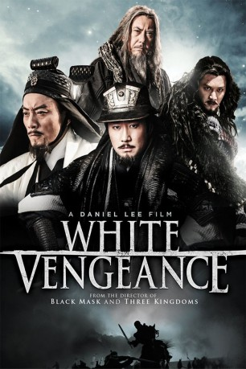

#3208 White Vengeance - Kampf um die Qin-Dynastie
Alternativ: White Vengeance (Englischer Titel)
 
 IMDB-Wertung: 6.2 / 10
IMDB-Wertung: 6.2 / 10  Metascore: 0
Metascore: 0 
Wir schreiben das Jahr 206 vor Christus. In der ganz China beherrschenden Qin-Dynastie erheben sich Rebellen und stürzen das Land in blutiges Chaos. Deren Anführer Liu Bang (Leon Lai) und Xiang Yu (Feng Shaofeng) kämpfen gemeinsam um die Vormachtstellung im Reich. König Huai (Huinan Zhao) erkennt deren Kampfgeist und unabdingbaren Siegeswillen. Um den Thron fürchtend versucht er, sie gegeneinander auszuspielen. Einst Brüder im Kampfe werden sie mehr und mehr zu Rivalen. Auch die hübsche Yu Ji (Yifei Liu) scheint plötzlich zwischen ihnen zu stehen. Es kommt zu einer tragischen und unausweichlichen Auseinandersetzung zwischen den machtgierigen Anführern …
Jahr: 2011
Dauer: 137 Minuten
FSK: 16
Land: China Studio: Splendid FilmTonspuren:
Untertitel: Deutsch,
Auflösung: 1080p (1920x808) Größe: 6215 MB
Genre: Action, Drama, Geschichte
Regisseur: Daniel Lee
Drehbuch: Daniel Lee
Soundtrack: Henry Lai
Darsteller:
 Shaofeng Feng als Xiang Yu
Shaofeng Feng als Xiang Yu- Leon Lai als Liu Bang
 Hanyu Zhang als Zhang Liang
Hanyu Zhang als Zhang Liang Anthony Chau-Sang Wong als Fan Zeng
Anthony Chau-Sang Wong als Fan Zeng- Yifei Liu als Yu Ji
 Andy On als Han Xin
Andy On als Han Xin- Jordan Chan als Fan Kuai
- Qing Xiu als Xiao He
- Haifeng Ding als Xiang Zhuang
- Xiang Dong Xu als Xiang Bo
- Zhi-Hui Chen als Xiahou Ying
 Kuan Tai Chen als Bearded warrior
Kuan Tai Chen als Bearded warrior- Huinan Zhao als King Huai II of Chu
- Qing Jia als Female assassin
- Wen-Ting Sun als One of the Nangong Sisters
- Tong-di Meng als One of the Nangong Sisters
- Zi-qi Huang als One of the Nangong Sisters
 Ma Wu als Grand Tutor
Ma Wu als Grand Tutor- John Do als Assassin
- Zhao Wen Hao als Student Bofu
Datei: X:\HD-Eastern-Classic(N-Z)\White Vengeance - Kampf um die Qin-Dynastie (2011, FSK16, 1920x808).mkv seit 19.02.2016
Festplatte: HD Eastern+Western
 Es gibt insgesamt 61 Filme in der Gruppe 'HD-Eastern-Classic(N-Z)'
Es gibt insgesamt 61 Filme in der Gruppe 'HD-Eastern-Classic(N-Z)'